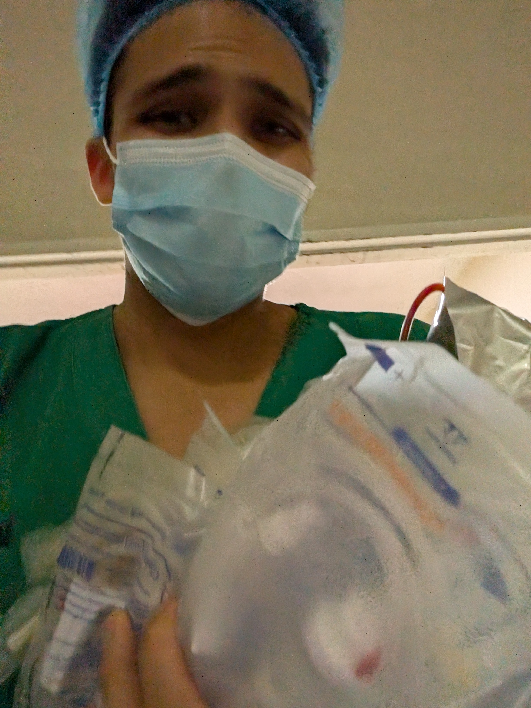

Sinceramente no me animaba del todo a escribir esto, son inseguridades muy íntimas; solo espero que al menos logres entender que si sientes algo similar, no estás solo:
Nunca olvidaré aquel noviembre de 2025. No podía creer los resultados del examen de EsSalud para el internado. Realmente no sé cómo logré aquello, si me lo preguntas: tuve suerte; siempre la he tenido. Recuerdo las felicitaciones, la mirada de orgullo; sonaban los ecos que me hacían sentir especial… nuevamente
Ahora estoy aquí, en el hospital más grande del país, rodeado de cerebros brillantes. Me siento pequeño; admiro mucho a mis amigos, que resuelven las cosas en un segundo, pero admito que también envidio su brillo porque resalta mis carencias. Prefiero actuar, aunque, sinceramente, sienta que todo está mal.
Trato de fingir confianza,
Que parezca que tengo todo planificado,
Que parezca que tengo los conocimientos,
Que parezca que soy bueno con la investigación,
Que parezca que llevo una vida saludable,
Que parezca que soy un buen delegado,
Que parezca que no me afectan lo que les pasa a mis pacientes,
Que parezca que cada día soy una mejor versión de mí mismo,
Que parezca que… al menos… sigo siendo buena persona,
El yo que todos conocen es como un modelo anatómico ficticio. Todos los días me pongo mi disfraz azul, mi estetoscopio que ha dejado de reconocerme, y mi máscara de confianza que no tengo. Aparentar que sigo siendo especial.
Porque no quiero que mis cointernos tengan un mal recuerdo de mí,
No quiero decepcionar a mis residentes,
No quiero perder las pocas oportunidades que me quedan,
No quiero que mis pacientes pierdan la confianza en mí
Muchas veces no quiero mostrar lo que soy, me da pánico que vean mi vacío, es mi mayor problema para conectar con los demás, mi verdadera condena: estar solo en un lugar donde casi nadie me conoce.
Llámame mentiroso por mostrar a alguien que no soy,
Llámame creído por no tener la humildad de mostrar mis debilidades,
Llámame cobarde por miedo a que al admitir mi ignorancia.
Lo siento, de verdad lo siento, solo estoy sobreviviendo, intentando no ahogarme en el mar de
expectativas altas. Es tan doloroso saber que no eres lo que te gustaría ser… saber que nunca vas a
ser el médico que ellos piensan que eres.
